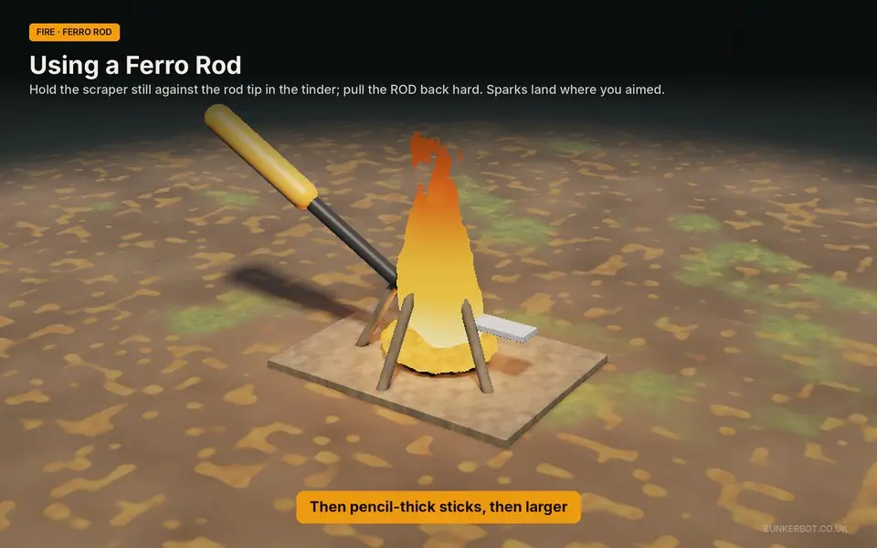
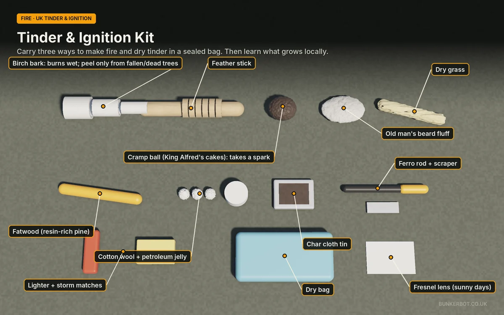
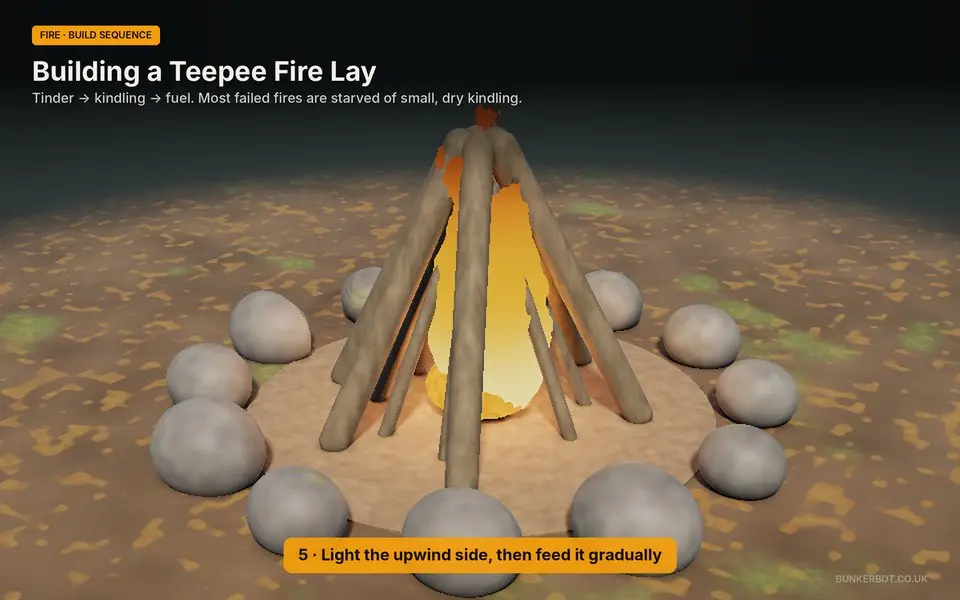
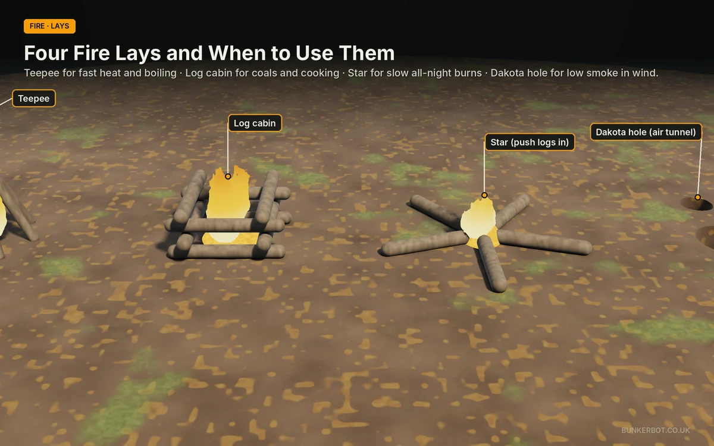
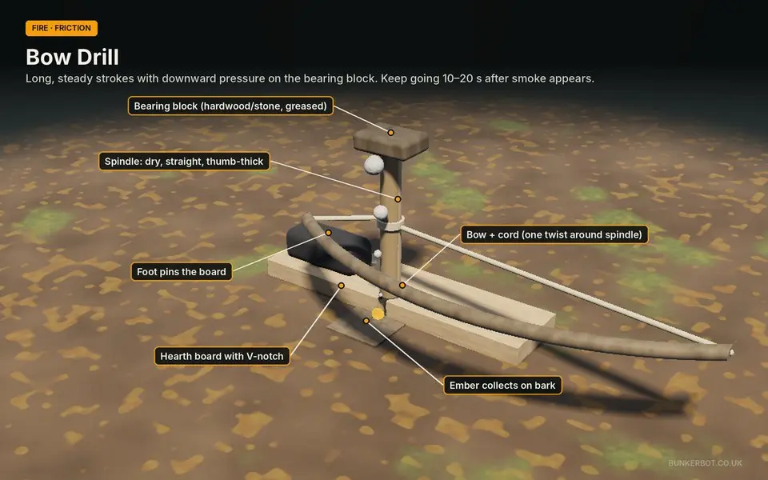
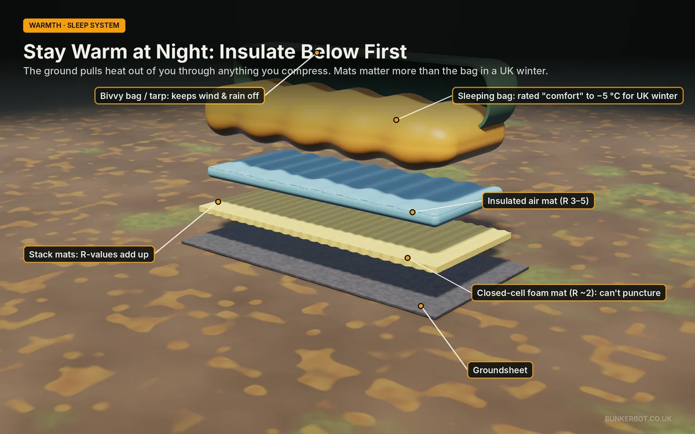

Fire Making & Staying Warm
In Britain the killer isn't the cold. It's being cold and wet. Fire and insulation are how you stay alive.
Hypothermia kills more UK outdoor casualties than anything else, and it happens at +5 °C in wind and rain, not just in snow. Carry three ways to make fire (lighter, ferro rod, storm matches) and dry tinder in a sealed bag. Primitive methods are a backup skill, not a plan. Insulate from the ground first. You lose more heat into a cold floor than into the air. Indoors: never use a BBQ, camping stove, patio heater or generator for heat. Carbon monoxide kills silently. Fit CO alarms.
1. The Fire Triangle & UK Conditions
Fire needs heat, fuel and oxygen. Take one away and it dies. In Britain the enemy is moisture: wet wood soaks up heat to boil off water before it can burn. Everything below is about getting enough heat into small enough, dry enough fuel for long enough.
- Dead wood still attached to trees ("standing dead") is far drier than wood lying on the ground.
- Wood that snaps cleanly is dry. Wood that bends is wet or green.
- Thin is everything: matchstick, then pencil, then thumb, then wrist. Each size must be burning well before you add the next.
2. The Law on Fires
| Where | Rule |
|---|---|
| England & Wales | No general right to light fires on land you don't own; you need the landowner's permission. Most national parks, the National Trust and the Forestry Commission ban open fires, and fire bans are common in dry spells. Disposable BBQs are banned in many parks. |
| Dartmoor | Wild camping on the commons is lawful after the 2025 Supreme Court ruling, but the National Park code bans fires. |
| Scotland | The Outdoor Access Code allows small, responsible fires. Avoid peat, woodland, dry grass and summer drought, and leave no trace. Local byelaws (e.g. Loch Lomond & The Trossachs camping zones) restrict fires further. |
| Your own land | Allowed, but smoke nuisance and the Clean Air Act rules (smoke control areas) apply. Never burn plastics. |
Use your own garden (in a fire pit), a bushcraft course, a campsite that allows fires, or land where you have permission. Leave no trace: use a fire pan or a lifted turf, and replace it afterwards.
3. Ignition: Three Ways Minimum
| Method | Pros | Cons | Notes |
|---|---|---|---|
| Lighter (Bic-type) | Fast, ~3,000 lights | Fails when cold/wet; gas runs out | Keep one in an inside pocket to stay warm |
| Storm/lifeboat matches | Burn in wind and rain, 10–15 s | Single use, bulky | Store in a waterproof tube with the striker |
| Ferro rod | Works soaking wet, thousands of strikes | Needs fine tinder and practice | Pull the rod back, not the scraper forward, so you don't scatter the tinder |
| Fresnel lens / magnifier | Unlimited, no consumables | Needs sun (rare in a UK winter) | Use with char cloth or a cramp ball |
| Battery + wire wool | Uses what you have | Fire risk in your pack | Use 0000 wire wool and a 9 V battery; store them apart |
| Bow drill / hand drill | No kit needed | Hard; needs dry wood and fitness | Learn on a course: see §7 |
Three ways to light it, two kinds of prepared tinder, one sealed dry bag. Test everything every season.

4. UK Tinder, Kindling & Fuel

Natural tinder in Britain
| Tinder | Where / when | How to use |
|---|---|---|
| Silver birch bark | Birch woods everywhere | Oily; burns even when damp. Take papery curls from fallen or dead trees (stripping live trees kills them). Scrape it into fluff. |
| Cramp ball / King Alfred's cakes (Daldinia) | Black lumps on dead ash | Takes a spark, smoulders for ages: an ember extender |
| Old man's beard (wild clematis seed heads) | Chalk hedgerows, autumn/winter | Fluffs into a spark-catching nest |
| Dry grass, bracken, rosebay willowherb fluff | Late summer–autumn | Shred it into a bird's nest |
| Bulrush (reedmace) fluff | Wetlands, autumn | Catches sparks; burns fast |
| Thistle & dandelion down | Summer | Burns fast: mix with something slower |
| Fatwood (resin-soaked pine stumps) | Conifer plantations | Shavings burn even in rain |
| Honeysuckle bark, cedar bark | Hedges, woods | Rub between the palms into fibre |
| Feather sticks | Any dry dead wood: split it to reach the dry centre | Carve thin curls left attached to the stick |
Prepared tinder (carry it)
Cotton wool smeared with petroleum jelly (burns ~2 min each), char cloth (100% cotton baked in a sealed tin), commercial tinder tabs, wax-dipped cardboard, and tea lights.
Fuel: what burns well (UK)
| Good | Poor / avoid |
|---|---|
| Ash (burns even fairly green), oak (seasoned), beech, hawthorn, birch (fast and hot), hazel | Willow, poplar, alder (smoky, low heat); green wood of any kind |
| Dead standing branches; split wood from dead logs | Elder (smoky), yew (toxic smoke), laurel, rhododendron, treated or painted timber, plastics |
5. Building the Fire: Step by Step

- Site: sheltered from wind, away from overhanging branches, roots and peat (peat smoulders underground for weeks). Clear a 1 m circle down to mineral soil, or use a fire pan.
- Platform: on wet or snowy ground, lay a base of dry sticks or bark so the tinder isn't sitting in water.
- Gather everything first: two big double-handfuls of tinder, an armful of pencil-thin kindling, and an armful of thumb-thick sticks. Then gather double that. Most fires die because people run out of kindling.
- Tinder bundle in the centre, with a gap facing the wind.
- Kindling teepee over it, leaving that doorway.
- Light the windward side low down. Shield it with your body.
- Feed gradually: add sticks only when the previous size is burning fiercely. Don't smother it.
- Blow gently at the base if it falters: long, slow breaths.
- Put it out properly: drown it, stir it and drown it again until it's cold to the back of your hand. Scatter the cold ashes and replace any turf.
6. Fire Lays for Different Jobs

| Lay | Best for | Notes |
|---|---|---|
| Teepee | Fast heat, lighting, boiling water | Burns quickly; needs constant feeding |
| Log cabin | Cooking on coals, long steady heat | A square crib around a small teepee; collapses into an even bed of coals |
| Star | All-night fire with little wood | Push the log ends inward as they burn |
| Long fire | Warming a sleeper (with a reflector) | Two parallel logs as long as you are. See Field Shelters. |
| Dakota hole | Wind, low smoke, low visibility, fuel efficiency | Two holes joined by an air tunnel; the upwind hole feeds air. Not in peat or root-filled ground. |
| Swedish torch | Cooking on a stable top | A log split into quarters and re-bound (or a chainsaw-cut log) |
7. Friction Fire: The Bow Drill

Good UK woods (spindle and hearth from the same piece is fine): sycamore, lime, hazel, willow, ivy (thick dead stems), field maple, alder. Everything must be bone dry and dead. Avoid resinous woods.
- Spindle: 20 cm long, thumb-thick, straight, pointed at the top and blunt at the bottom.
- Hearth board: 2 cm thick. Carve a starter divot near the edge.
- Bearing block: a hardwood block or a stone with a socket, lubricated with leaf, grease or nose oil, so the top doesn't burn.
- Bow: an arm-length, slightly curved stick with paracord, slack enough for one twist around the spindle.
- Burn in: drill a black socket, then cut a V-notch (⅛ of a circle) to its centre.
- Ember pan: a leaf or bark slip under the notch.
- Drill: your foot pins the board; your wrist braces against your shin. Make long, full, even strokes with steady downward pressure. Speed up when smoke appears, and keep going 10–20 strokes after you think you have an ember.
- Nurse it: let the ember glow for a few seconds, tip it into a tinder bundle, fold it gently, and blow long and slow until it flames.
(spindle spun between the palms) works with elder or bulrush stems and a lime hearth, but it's far harder in a damp UK climate. The bow drill is the realistic primitive method here.
8. Fire in Wet Weather
- Go to the dry stuff: standing dead branches, the underside of fallen trunks, inside dead logs (split them), and dead twigs low down inside conifers ("squaw wood").
- Split everything: wet outside, dry heart. Make feather sticks from the inside.
- Use what burns wet: birch bark, fatwood, cotton-wool-and-petroleum-jelly, and a candle stub to nurse the flame for minutes.
- Build bigger and hotter than you think, and dry the next batch of fuel around the fire.
- Get out of the rain: under a tarp, an overhang or the lee of a log. Keep your fire kit in an inside pocket.
9. Hypothermia: Recognise & Treat
Stumbles, mumbles, fumbles, grumbles. Clumsy hands, slurred speech, irritability and poor decisions come before the person feels cold. If shivering stops while they're still cold, it's an emergency.
| Stage | Signs | Action |
|---|---|---|
| Mild (core 35–32 °C) | Shivering, numb hands, clumsy, apathetic | Shelter from wind and wet, swap wet clothes for dry, insulate from the ground, give warm sweet drinks and high-calorie food, exercise gently |
| Moderate (32–28 °C) | Violent then stopping shivering, confusion, slurred speech | Handle gently, keep them horizontal, add insulation, a vapour barrier and heat packs on the chest, armpits and groin. Call 999 / Mountain Rescue. |
| Severe (< 28 °C) | Unconscious, barely breathing | Call 999, handle very gently, insulate, and start CPR if there is no breathing |
Prevention: eat and drink regularly, stay dry (vent before you sweat), add a layer before you're cold, keep moving and get out of the wind. In the UK, wet and wind are the danger. Also see Medical & First Aid.
10. Clothing: The Layer System
| Layer | Purpose | Choose | Avoid |
|---|---|---|---|
| Base | Moves sweat off the skin | Merino wool or synthetic | Cotton: "cotton kills" when wet |
| Mid | Traps warm air | Fleece, wool jumper | — |
| Insulation | Static warmth at rest | Synthetic jacket (still warm when wet; best in the UK); down for dry cold | Down in persistent wet |
| Shell | Stops wind & rain | Breathable waterproof jacket + trousers | Non-breathable coats for active use |
| Extremities | 30–40% of perceived warmth | Wool hat, buff, 2 pairs of gloves (liner + waterproof), wool socks, a spare dry pair in a dry bag | — |
Rule: start walking slightly cold; add insulation the moment you stop.
11. Sleeping Warm

- Mat R-value: summer R 2; UK winter R 4–5+. Stack a closed-cell foam mat (puncture-proof) under an insulated air mat.
- Sleeping bag: pick the comfort rating, not the limit or extreme rating. For a UK winter, comfort −5 °C or lower; three-season comfort around 0 °C.
- Bivvy bag or tarp blocks wind and adds 2–5 °C.
- Tricks: eat fats before bed, empty your bladder, wear a dry hat and dry socks, put a hot-water bottle (a Nalgene filled with boiled water) at your core or groin, and do 2 minutes of sit-ups before you get in.
- Don't breathe into the bag: the moisture wets the insulation. Use a buff over your face instead.
12. Heating a Home in a Winter Blackout
Your gas boiler stops without electricity (see Solar & Power for how to run it from a power station). Plan for 3+ days without heat:
- One warm room. Choose a small, south-facing room with few outside walls. Everyone lives and sleeps there.
- Seal it. Close the curtains, add blankets over windows and doors, roll up a towel at the door bottom, and close off unused rooms.
- Insulate people, not air. Wear layers, hats indoors, and sleeping bags on the sofa. Pitch a tent indoors over the bed for kids.
- Safe heat sources:
- Wood burner or open fire (with a sweep-checked chimney).
- Indoor-rated paraffin or catalytic gas heaters, with ventilation and a CO alarm in the room.
- Hot-water bottles (filled from a gas hob or camping stove used safely).
- Body heat.
- Never indoors: BBQs (charcoal or gas), patio heaters, camping heaters not rated for indoors, generators, or a gas oven used for heating.
- Candles: a fire risk. Use LED lanterns instead (see Small-battery prepping).
- Pipes: if the house will freeze, shut off the water and drain the system.
- Check on vulnerable neighbours. Cold homes kill elderly people in days.
Headache, dizziness, nausea, tiredness and confusion, often in everyone in the room at once. Get out into fresh air, call 999 (or the gas emergency line 0800 111 999). Fit a CO alarm in every room with a fuel-burning appliance.
13. Heat: Staying Cool in a Heatwave
Britain now hits 30 °C+ most summers (40.3 °C was recorded in July 2022). Heatwaves now cause thousands of excess deaths in England in a hot summer, mostly among older people indoors. In England the UKHSA Heat-Health Alerts (yellow, amber, red) run from June to September. Yellow alerts still cost lives, so act on them.
| Heat exhaustion | Heatstroke 🚨 | |
|---|---|---|
| Signs | Headache, dizziness, nausea, cramps, heavy sweating, pale clammy skin, fast pulse, intense thirst | Confusion, slurred speech, fits, collapse, hot skin that may stop sweating, temperature 40 °C+ |
| Do | Move to shade or a cool room, lie down with feet raised, sip water or rehydration drinks, cool the skin (wet cloths, fan) | Call 999. Cool them hard while you wait: soak the skin with cool water, fan, ice packs to armpits, groin and neck |
| Escalate | If they're not better after 30 minutes of cooling, treat as heatstroke | Put them in the recovery position if unconscious |
Keeping a home cool (no power needed):
- Shut windows and close curtains or blinds on sunny sides during the day. Outside reflective covering beats internal blinds.
- Open everything at night once it's cooler outside than in: cross-ventilate front to back, and upstairs to downstairs (the stack effect).
- Sleep low: the ground floor or a cellar can be 5–10 °C cooler than a loft room.
- Wet cooling: a damp sheet over a fan or open window, cool foot baths, and a wet cloth on the neck and wrists. Evaporation works best in dry heat.
- Fridge-free food: in a heatwave power cut, eat perishables first, keep the freezer shut (a full one holds about 48 hours), and move to tins and dried food.
Out in the field:
- Move at dawn and dusk; rest in shade from 11:00 to 15:00.
- Drink before you're thirsty: 0.5–1 L an hour when working hard in heat, with salts. Pale urine is the target.
- Wear loose, light-coloured clothing and a brimmed hat. Wet the hat and neckerchief at every stream (after checking for blue-green algae).
- Wildfire risk: in dry spells no fires at all, including barbecues on moorland. See The Law on Fires.
Who's at risk:
- People: over-65s, babies and young children, the chronically ill, people on some medicines (diuretics, some blood-pressure and mental-health drugs), and people living alone or in top-floor flats. Check on them twice a day during an alert.
- Animals: pets and livestock need shade and water too. Never leave a dog in a car.
14. Kit Tiers
Tier 0: Pocket fire kit (£10–25)
- Bic lighter + 20 storm matches in a waterproof tube + ferro rod
- 10 cotton-wool-and-petroleum-jelly balls in a film tub or zip bag
- Wool hat and buff (they live in your coat)
Tier 1: Outdoor warmth (£100–300 · beginner)
- Fixed or folding knife suitable for feather sticks (see Bug-Out Bags for UK carry law)
- Folding saw; char cloth tin; tinder tabs
- Merino base layers, fleece, synthetic insulated jacket, waterproofs
- Closed-cell foam mat + 3-season sleeping bag
- Skills: light a fire in rain with one match; make feather sticks; recognise the -umbles
Tier 2: Winter-ready (£300–1,000 · experienced)
- Insulated air mat (R 4+) + winter sleeping bag (comfort −5 °C) + bivvy bag
- Fire steel, fresnel lens, bow drill set (practised)
- Folding fire pan / stove; small axe or hatchet
- Indoor-rated heater + CO alarms; 2 hot-water bottles per person
- Skills: bow drill ember; all-night fire; first aid with a hypothermia module
Tier 3: Home heat independence (£1,000–5,000)
- Wood burner (HETAS-installed) or a multi-fuel stove + two winters of seasoned logs stored dry
- Chimney swept every year; spare stove glass and rope seals
- Insulation upgrades (loft 270 mm+), heavy curtains, draught-proofing
- Boiler plug-and-socket conversion + a power station big enough to run it for 24 h
Tier 4: Bunker / homestead
- Woodland or coppice access (a sustainable fuel supply), splitting maul, wedges, bow saws, crosscut saw
- Rocket mass heater or masonry stove (high efficiency, low fuel)
- Bulk paraffin (stored legally and safely), wicks, spare heaters
- Printed guides; ignition caches in every vehicle and bag
Related Sections: Field Shelters → Field Water → Bug-Out Bags & Home Prepping → Solar & Power → Shelter & Construction → Making Fuel